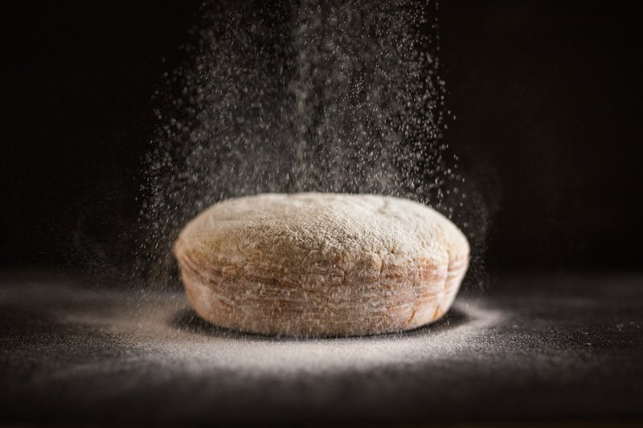

Te Invitamos a que nos visites y pruebes el mejor Pan
¿Que es el pan?
El pan es un producto comestible que resulta de hornear una mezcla previamente fermentada, lo cual contiene por lo menos los siguientes ingredientes: agua, harina’ levadura y sal, llamándose a estos ingredientes básicos, los cuales son responsables de las características de apariencia, textura y sabor; luego tenemos a los ingredientes secundarios como azúcar, grasa leche, huevos y otros los cuales proporcionan características de calidad; finalmente los ingredientes complementarios como los mejoradores que permiten asegurar un rendimiento constante durante el proceso. El pan constituye una importante fuente energética en forma de hidratos de carbono complejos (almidón). Contiene alrededor de un 9% de proteína.
Historia
Para conocer los orígenes del pan debemos remontarnos a un pasado remoto, el descubrimiento fue casual, nos situamos en la Época Neolítica, un antepasado del hombre conoce ya las semillas y cereales, y sabe que una vez triturados y mezclados con agua, dan lugar a una papilla. Este hombre olvida la papilla en una especie de olla, al volver encuentra una torta granulada, seca y aplastada, el primer pan acaba de tomar forma.
Desde ese momento, el pan ha estado unido a la evolución del hombre, ha estado presente en conquistas, revoluciones, civilizaciones, descubrimientos, es decir formando parte de la cultura universal del hombre.
En este artículo no vamos a referirnos a las cualidades nutricionales del pan, ni a sus componentes, ni a lo necesario que es en nuestra dieta mediterránea, vamos a conocer su historia, su simbología, sus curiosidades y esa cultura del pan, que tan presente está en nuestra vida.
Desde ese rudimentario primer pan, fruto del azar del hombre, hasta nuestros días, donde la oferta de panes es muy extensa -tenemos más de 315 variedades de pan-, el consumo de este alimento ha pasado por distintas etapas y civilizaciones.